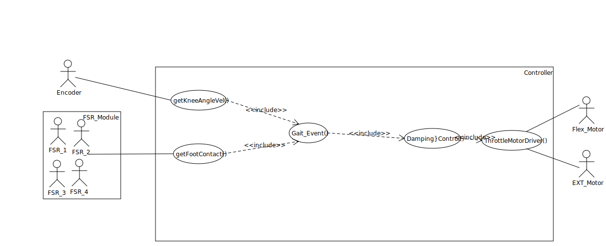
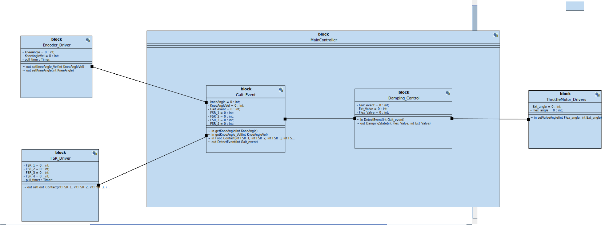
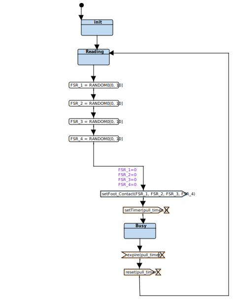

TTool project:
MPKSys.xml
Requirements
AVATARRD
Analysis
UseCaseDiagram 0

ActivityDiagram 0
MyScenario0

UseCaseDiagram 1
Design
Block Diagram

Behavior of Block: MainController
Behavior of Block: FSR_Driver

Behavior of Block: ThrottleMotor_Drivers
Behavior of Block: Encoder_Driver
Behavior of Block: Gait_Event
Behavior of Block: Damping_Control